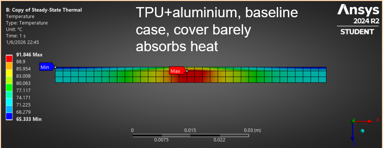

How does a material change heat flow through a phone?
We compared chassis and cover materials to understand how heat moves through a phone-like structure. The work combines simulation with a custom numerical check.

Source figure: Mali, “Smartphone thermal synergy” (2026), material-combination comparison.
Explore the technical work
Methods: 2D steady-state finite element analysis in ANSYS, compared across chassis and cover materials, with a custom one-dimensional explicit finite volume method in Python for cross-checking. The supplied paper includes temperature fields, material comparisons, and solver validation.
Interpretation: This is simulated work. It is presented as an engineering investigation, not as experimental validation or a commercial product result.
Material-combination comparison extracted from the supplied research document.
Computational result; experimental validation is not claimed here.